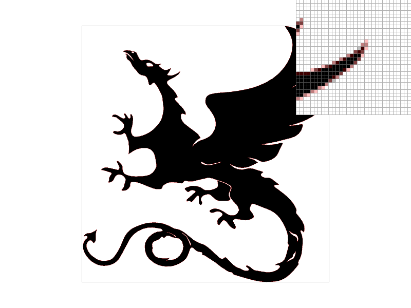
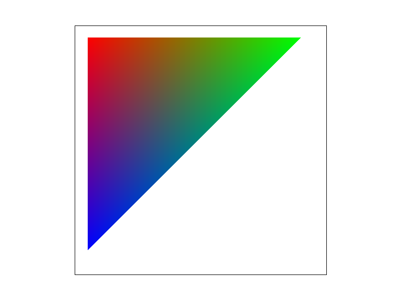
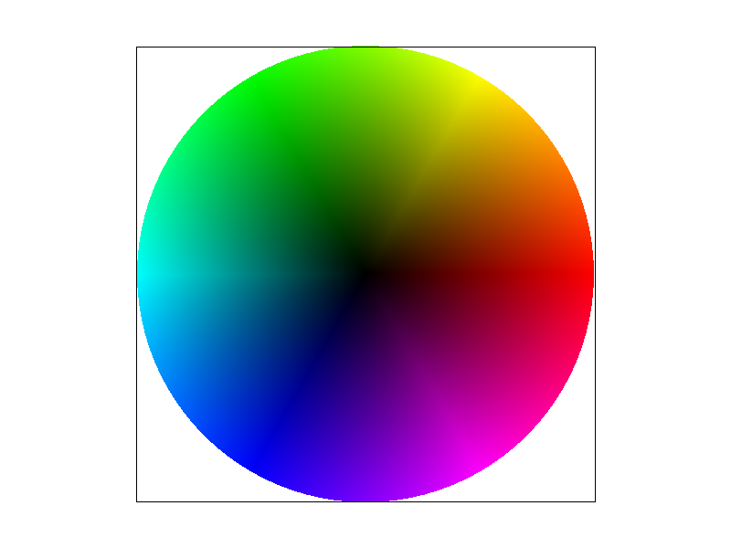
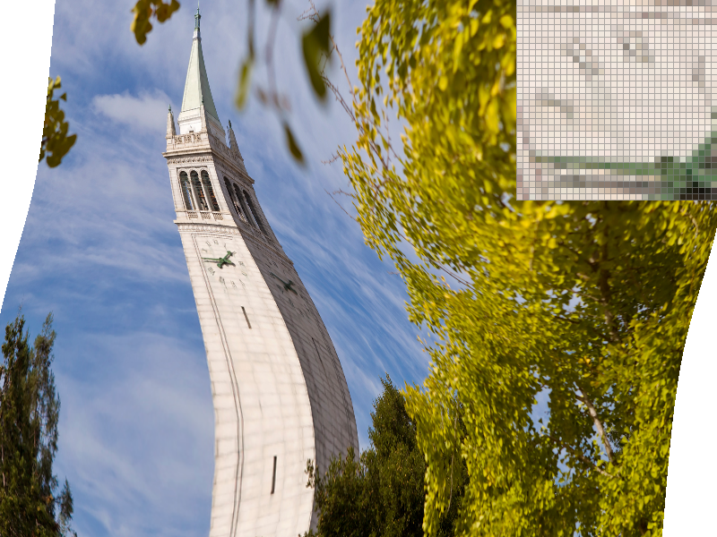
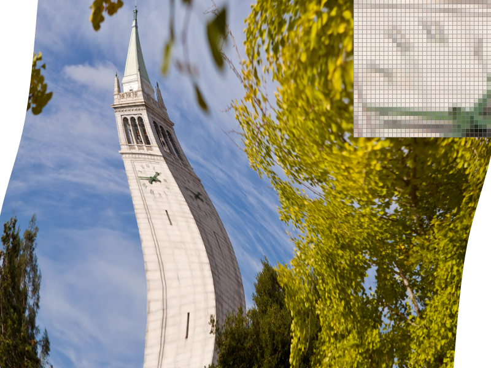
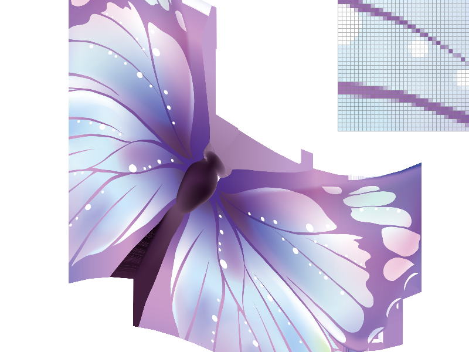

Overview
In this project, I built a basic rasterizer. This is basically a program that converts an image described by a series of vectors and shapes into actual pixels that can be displayed on a screen. I learned that the process of rasterization is much more complicated than it seems with a lot of little nuances and mathematics. I learned a lot about different types of rasterization techniques and their tradeoffs along with cool words I've seen a lot in my life by have never understood the meaning such as "anti-aliasing."
Section I: Rasterization
Part 1: Rasterizing single-color triangles
Rasterizing a triangle means figuring out how to color a real-world triangle (continuous shape described by vectors) in the pixel realm (discrete). My algorithm basically takes the pixels inside the bounding box of the triangle and then determines if each one (as defined by their center) is inside the or not. If so it fills it in with the respective color. Thus, it is no worse than the bounding box algorithm.

Part 2: Antialiasing triangles
My supersample algorithm simply uses a sample_buffer that is sample_rate larger than the actual frame. It first divides up each pixel or coordinate in the original frame size into the sample_rate smaller squares and samples the color of the image at the center of them. Afterward, when finally choosing the final colors to display for each pixel, I take the average of all the rgb values and condense the larger sample_buffer back to the frame_buffer. In a sense, this adds a new layer to the rasterization pipeline where we first "scale" up the image, before condensing it back to the desired resolution. The datastructures used are simply 2 vectors. Supersampling is useful because it works against aliasing by smoothing out the high frequencies in images.
As can be seen in the images, as you increase the sample_rate, there is more “blurred” pixels between the black and white. This is because we are sample each pixel at multiple locations and taking the average, which leads to these edges being not black or white, but something in between. Furthermore, the sample_rate increases the number of colors used in the average, which leads to even more blurring.

|

|
|
Part 3: Transforms
Here is a picture of cubeman. He is celebrating and jumping because he just finished the 184 project!
Section II: Sampling
Part 4: Barycentric coordinates
Barycentric coordinates is a coordinate system that relates a position inside (or outside) a triangle to the triangle's vertices. This leads to what can be thought of as a weight system. The three "coordinates" a ,b, and c, can be thought of how strong the weight of a vertex is, something that increases as you get closer to the vertex. This can be used to find for example what color to make a pixel in a triangle. Looking at the image of the triangle shown below, we see that there are three points, one red, one green, one blue. Notice that the color is distributed in a way such that the closer you get to a vertex, the stronger that particular color is. Comparatively, the colors in the center are more mixed due the vertices being weighted more equally.
|  |  |
Part 5: "Pixel sampling" for texture mapping
Pixel sampling is the process by which we choose what pixel we should display on the screen. In the case of texture mapping, it describes how to basically apply the texture to a particular image. To do this, I first converted the desired point in the x, y plane to barycentric coordinate. This allowed us to then find the corresponding point in the u, v plane (the texture map). Because this converted point will most likely not land exactly on a specific point in the u, v plane, we have to find which corresponding color to map to. The two methods implemented were nearest sample, and bilinear interpolation.
For nearest, we simply round the converted continuous point in the u, v plane to the nearest integer values, to choose the color from the texture map.
For bilinear, we simply perform two linear interpolations to get a mixture of the 4 nearest points. First, we take the two nearest points above, and perform a lerp function (based off horizontal distance) on them to get a color that is a weighted combination of both. We repeat this step for the two nearest points below. Finally, we perform another lerp function on the resulting two colors (based off vertical distance). The result is a pixel color choice that takes into account the four nearest points on the texture map.
Below, we have 4 images of the Campanile. Both nearest and bilinear with sample rate 16, in my opinion look the best. These also look very similar when comparing the zoomed in image. However, we can see a clear difference in quality, between the bilinear and nearest sampling methods at the sample rate of 1. In the nearest image with sample rate 1, we can see many rendering artifacts as the texture has higher frequencies. The bilinear interpolation one improves this and removes many of the harsh frequencies.
|
|
|
|

|

|
Overall nearest sampling leads to more sharp changes in frequencies and thus aliasing. Bilinear interpolation reduces this by taking into account multiple nearby points to smooth out the transitions. This greatly helps when the texture map is higher resolution than what is needed to be displayed (texture magnification with higher frequency textures). With nearest neighbor, this can lead to more sharp frequencies appearing and thus artifacts. On the other hand, bilinear interpolation can take into account more pixels and "smooth" out the transition.
Part 6: "Level sampling" with mipmaps for texture mapping
Level sampling is the process by which you use different texture resolutions to pull from depending on how dense the sample on the screen is. To implement this "mipmapping," I simply found how much change a 1 pixel difference in both the x, and y direction in the xy plane was in the uv plane. We then took the minimum of this value's magnitude and used it to calculate the mipmap level it would use. The greater the distance, the higher the quality/level of the mipmap used as more detail would be necessary. Note that calculations for the mipmap levels were given.
Supersampling requires sampling of sample rate many more samples per pixel and additional memory to store the supersampled image. This requires the most memory usage and is the slowest. It, however, is quite effective and anti-aliasing by removing high frequencies. Level sampling is used for textures and is used to apply different textures to different areas of the image. Because the mipmap is preprocessed, and this avoids having to supersample multiple parts, this has better speed. However, storing a mipmap texture requires more memory because you are basically storing multiple copies of the same texture. Finally, pixel sampling (specifically bilinear interpolation) helps with texture magnification by taking multiple texture texels into account. However, this is slower as we need to take into account 4 times more texels along with some additional calculations.
|
|

|
|
|
|